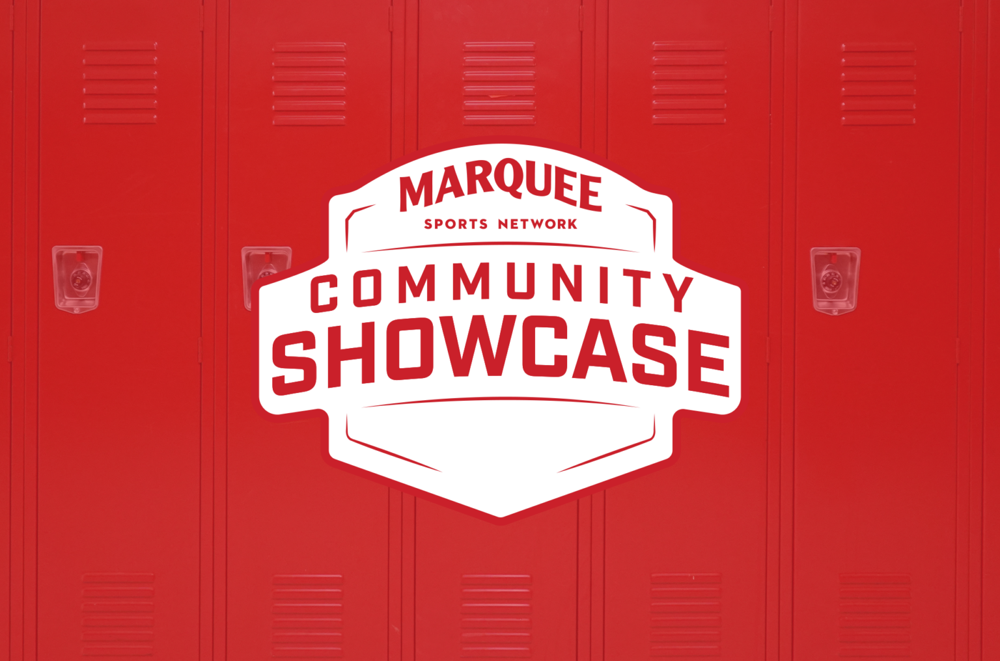
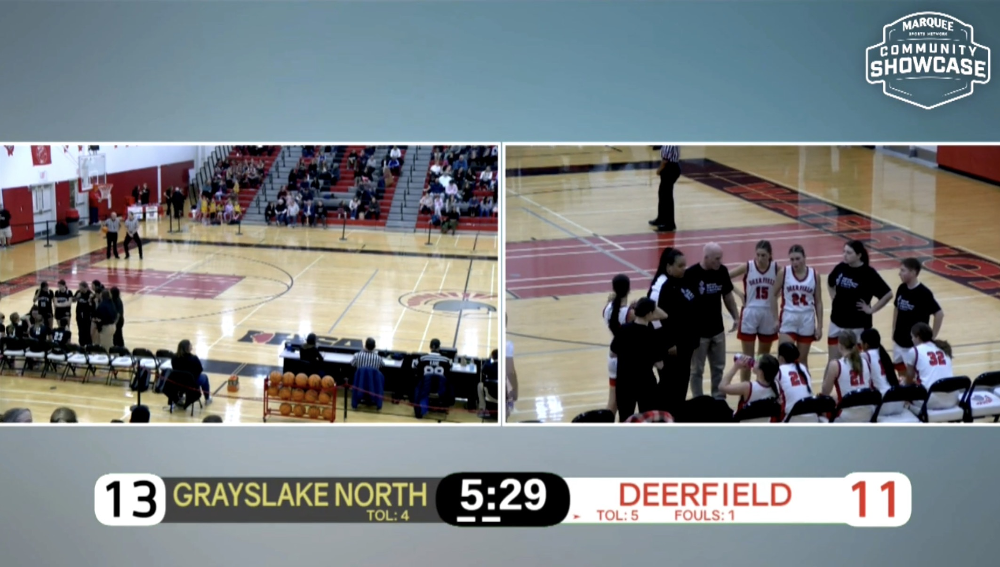

Problem
- Produce two sucessful broadcasts as a part of Marquee Network's Community Showcase
- Leave a lasting impact on Marquee for future job opportunities
My experience with directing and producing live TV Sports broadcasts

Marquee Community Showcase Logo.

Behind the scenes of the second Broadcast.